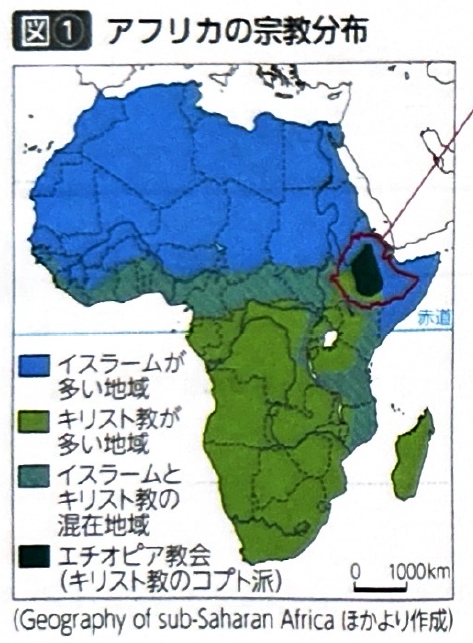
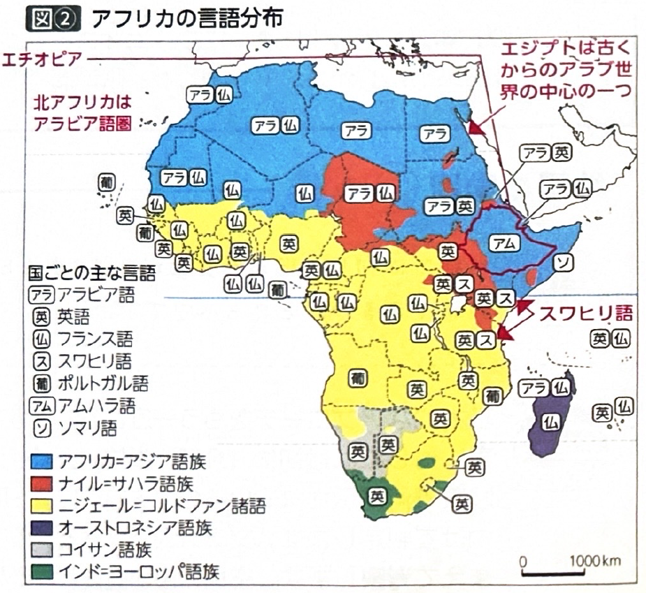
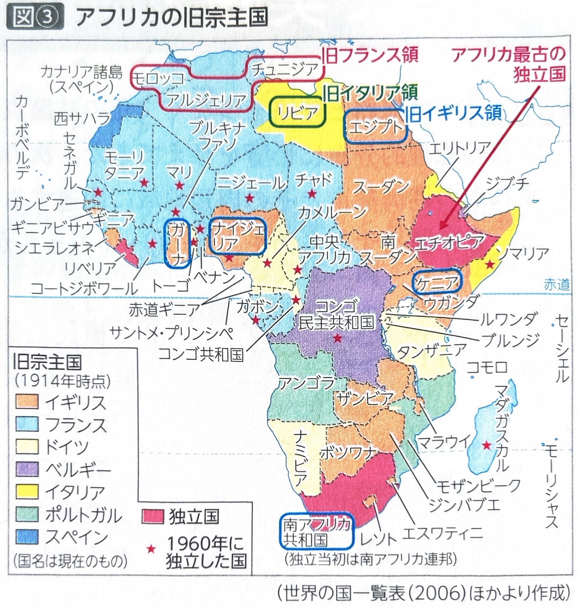
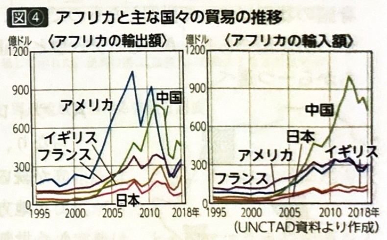

第4章 アフリカ - 社会・文化
ポイント総復習
1. アフリカの言語と宗教
アフリカ大陸には多様な民族が居住しており、言語や宗教の分布には特徴的なパターンがあります。
| 地域 | 主な言語 | 主な宗教 | 備考 |
|---|---|---|---|
| 北アフリカ | アラビア語 （アフリカ=アジア語族） |
イスラーム | 西アジアと同様に、アラブ民族が多く居住しています。 |
| エチオピア | アムハラ語など | キリスト教 | 北アフリカの中で例外的に、古くからキリスト教（コプト派など）が定着しています。 |
| サハラ以南 | ニジェール=コルドファン諸語など | キリスト教 伝統信仰 |
ヨーロッパから伝播したキリスト教と、各部族の伝統信仰がみられます。 |
| マダガスカル | オーストロネシア語族 | - | 大昔に東南アジアから海を渡って伝播しました。その影響で水田稲作が盛んです。 |
| 東部沿岸 （ケニア等） |
スワヒリ語 | - | インド洋交易の影響で、現地の言葉にアラビア語が混ざって形成されました。 |


2. アフリカの植民地支配と独立
アフリカの多くの国は、第二次世界大戦前までヨーロッパ列強の植民地支配を受けていました。
- 第二次世界大戦前の独立国：エジプト、リベリア、南アフリカ共和国、エチオピアの4か国のみでした。
- アフリカの年：戦後に独立運動が高まり、特に1960年には一挙に17か国が独立を果たしました。
- 公用語：植民地時代の影響で、特にサハラ以南では多言語間の共通語として旧宗主国の言語（英語、フランス語、ポルトガル語など）を公用語とする国が多いです。
- 国境と民族紛争：植民地時代に宗主国の都合により、民族分布を無視して経線・緯線などで直線的に引かれた国境が独立後も引き継がれたため、ルワンダなどで深刻な民族紛争が頻発しました。
- ナイジェリアの遷都：多民族国家であるナイジェリアでは、民族間の対立を緩和し国内の融和を図るため、沿岸部の旧首都ラゴスから、国土の中央部にあるアブジャへと首都を移転しました。

3. アフリカの都市と社会・経済動向
アフリカの都市と経済の発展には、歴史的背景や大国の影響が色濃く反映されています。
| 特徴 | 関連する都市・動向 |
|---|---|
| 古くからの都市 | エジプトの首都カイロはナイルデルタに位置し、古くからアラブ世界の中心都市の一つとして栄えてきました。 |
| ヨーロッパが開発 | ケニアの首都ナイロビや、南アフリカ共和国の最大都市ヨハネスブルクなどは、植民地時代にヨーロッパ人によって開発された都市の典型です。 |
| 大国の進出 | 近年、アフリカのインフラ開発や資源開発において、中国主導による援助や投資が急激に拡大しており、中国とアフリカ諸国との経済的・政治的な結びつきが非常に強まっています。 |

基礎問題（理解度チェック）
Q1. アフリカの言語と宗教について、空欄を埋めなさい。
北アフリカではアフリカ=アジア語族の
が話され、主に
を信仰するアラブ民族が多く居住している。しかし、北東部の
では例外的に古くからキリスト教が定着している。また、東部の沿岸地域ではインド洋交易の影響で現地の言葉にアラビア語が混ざった
が広く使われている。
Q2. マダガスカルの特徴について、空欄を埋めなさい。
アフリカ大陸の東に位置するマダガスカル島には、大昔に東南アジアから海を渡ってきたとされる
の言語が分布している。その文化的な影響もあり、マダガスカルではアフリカとしては珍しく
が盛んに行われている。
Q3. アフリカの独立と国境について、空欄を埋めなさい。
アフリカの多くの国はヨーロッパの植民地支配を受けていたが、
年には17か国が一挙に独立を果たし、この年は「アフリカの年」とよばれた。しかし、植民地時代に民族分布を無視して経線や緯線で直線的に引かれた
が独立後も引き継がれたため、ルワンダなど各地で深刻な
が発生する原因となった。
Q4. ナイジェリアでは、国内の多数の民族間の対立を緩和し融和を図る目的で、特定の民族の勢力が強い沿岸部の都市から、国土の中央部に位置する新都市「アブジャ」へと首都を移転した。
Q5. 近年、アフリカ諸国における道路や鉄道などのインフラ開発・資源開発において、かつての宗主国であるヨーロッパ諸国の影響力は完全に排除され、アメリカ合衆国のみが独占的に投資と援助を行っている。